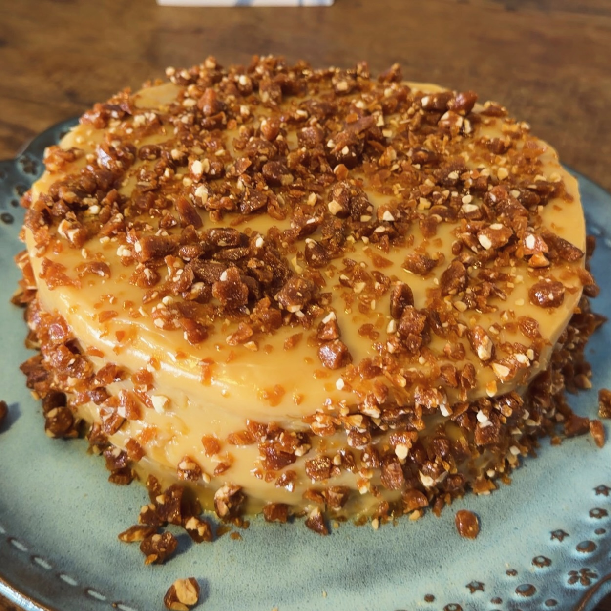
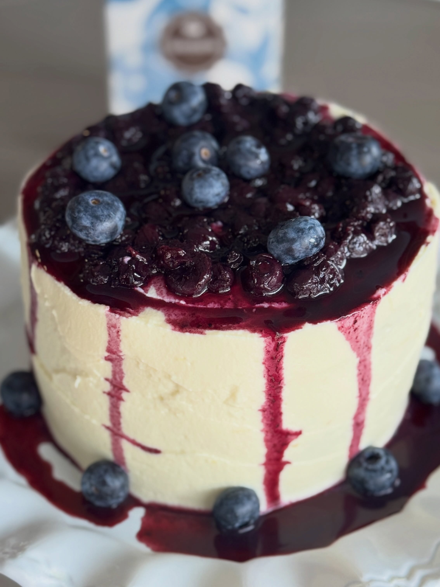
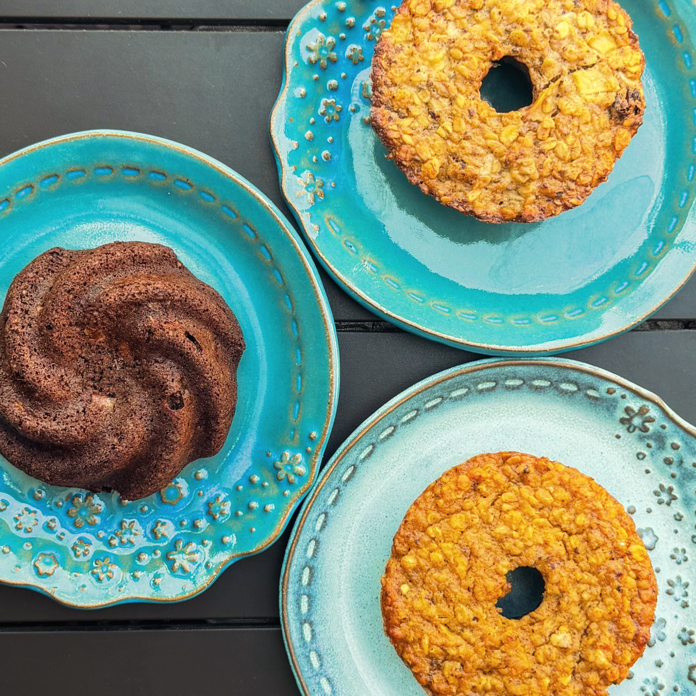
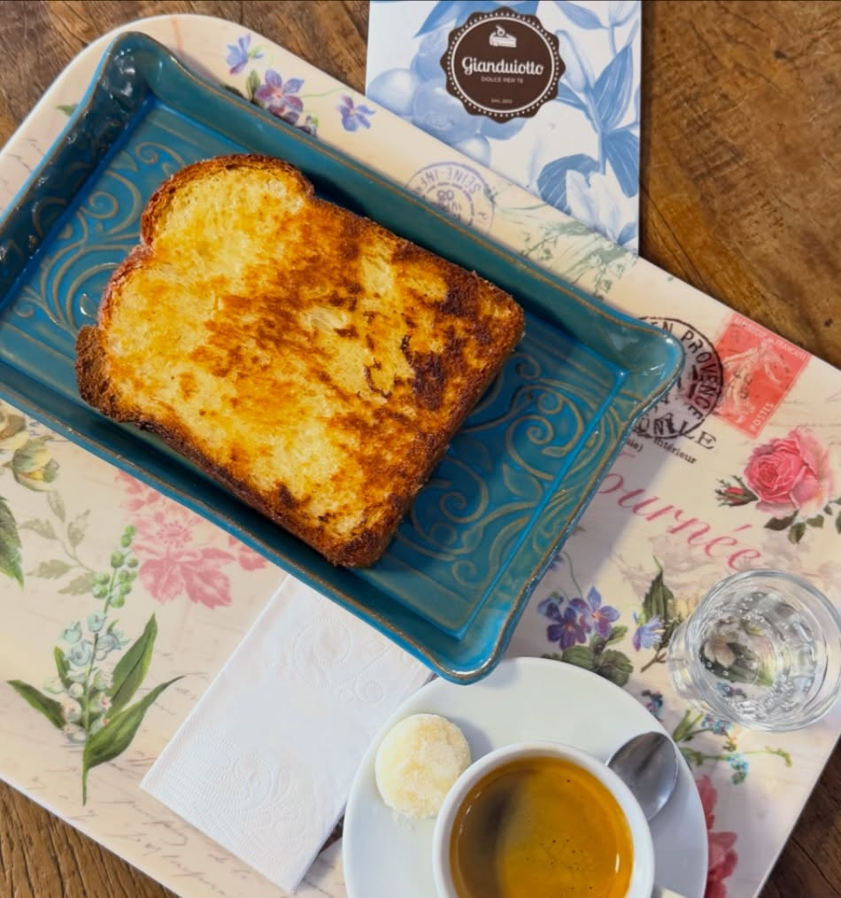

Crocante de Caju
Brigadeiro branco cremoso e crocante de castanha de caju. Textura e delicadeza a cada fatia.
Consultar encomenda ↗DOCERIA & CAFETERIA · VINHEDO
O carinho de uma fatia de bolo.
O prazer de um café sem pressa.
Um bom motivo para estar junto.

01 — AS DELÍCIAS
Camadas, texturas e sabores para descobrir. Uma pequena seleção do que fazemos por aqui.

Brigadeiro branco cremoso e crocante de castanha de caju. Textura e delicadeza a cada fatia.
Consultar encomenda ↗
Nossos bolinhos individuais, em diferentes receitas. O tamanho certo para acompanhar o seu café.
Consultar os sabores ↗Chantilly, calda de mirtilo e frutas frescas. Um doce encontro entre cremosidade e acidez.
Conversar sobre meu bolo ↗Essa é uma seleção das nossas delícias. Sabores, tamanhos, preços e disponibilidade são confirmados diretamente com a equipe.
O que tem na vitrine hoje? ↗02 — FEITO PARA CELEBRAR
Aniversário, encontro em família ou um carinho em forma de bolo. Conte a ocasião e vamos conversar sobre sua encomenda.
Planejar minha encomendaCompartilhe a data e o que você está imaginando para esse momento.
Converse sobre sabores, tamanhos e as opções disponíveis para a sua data.
A equipe confirma valores, antecedência e a melhor forma de receber sua encomenda.

03 — A NOSSA CASA
Em Vinhedo, a Gianduiotto reúne bolos, doces e café para os pequenos prazeres do dia. Em 2026, são 14 anos de história.
Do brioche dourado na chapa ao seu doce favorito, cada escolha é um convite para ficar mais um pouco.
“Aqui tem felicidade certa!”
O dia a dia da Gianduiotto no Instagram ↗Rua Manoel Matheus, 1358
Vinhedo · São Paulo
Encomendas e informações
WhatsApp (19) 97148-6408 ↗
Em feriados, confirme o horário com a equipe.